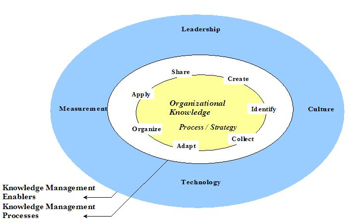

| Artifact: Knowledge Model
(ORG 411)
|
|
 |
| The Knowledge Model work product represents the strategic knowledge requirements of an organization. |
Domains: Knowledge Management
Work Product Kinds: Model |
|
Purpose
The development of a Knowledge Model has several purposes with the exact emphasis and priority depending on the nature
and objectives of the specific customer engagement. The main reasons for developing a Knowledge Model are:
-
To provide a strategic overview and understanding of the major domains of knowledge, the knowledge management
processes and social capital needed to support the business strategies and processes within the scope of the
engagement
-
To provide parameters and boundaries for subsequent analysis and design activities (e.g., community formation,
portal design). The Knowledge Model sets the baseline
-
To provide high-level planning constructs with respect to the knowledge needs of the enterprise
-
To enable and support a proper alignment between the key knowledge requirements of the business and the goals and
objectives of the enterprise
-
To provide a useful vehicle for communication and ownership of knowledge management topics
|
Description
| Main Description |
This work product depicts, in graphical and textual form, a summary view of both the enablers of knowledge management
(the culture, technology, measurement and leadership factors) and the knowledge management processes (creation,
identification, collection, adaptation, organization, application and sharing) for the organization.
Like all models, the Knowledge Model is a simplified description of a real world environment. It is focused on certain
aspects of interest to the engagement, allowing a better understanding of the problem at hand. The model can be
positive, defining the current state of the organization, or it can be normative, defining a planned future state of
the organization.
The Knowledge Model will usually be comprised of several separate but related components:
-
Knowledge Domains, or the high level taxonomy of knowledge categories for the organization, along with the
relationship of that knowledge to the organization being analyzed, its processes and business strategies
-
Knowledge Management Enablers, those characteristics and capabilities of the organization that support the
knowledge management function, including: leadership, culture, technology and measurement
-
Knowledge Management Processes, those processes and the players who create, identify, collect, adapt, organize,
apply and share knowledge for the organization
|
| Notation |
The notation of the Knowledge Model may take either a text or graphics format approach appropriate to the engagement
and should include the following components:
-
The known relationships between the organization, its business processes and its key business strategies should be
illustrated. A simple series of matrices are useful to represent these relationships including:
-
-
Strategy to Organization Matrix (to identify the role of the organizational unit in implementing the
enterprise strategies and to identify the organizational unit with primary responsibility for each
strategy
-
Process to Organization Matrix (to show who has primary responsibility for the process and who else is
involved in the process)
-
Process to Strategy Matrix ((to indicate the relative impact of each process on the enterprise
strategies)
-
Process Knowledge Map (to illustrate the knowledge requirements, by process, for each process within the scope
of the engagement).
-
High-level process flow of the major knowledge processes for the organization (create, identify, collect,
adapt, organize, apply and share).
-
Summary assessment of the major knowledge management enablers of the organization including its leadership,
culture, technology and measurement factors.

Fig. 1 Knowledge Model Components (adapted from the APQC model) |
Illustrations
Key Considerations
Carefully plan the use and content of the Knowledge Model with the project manager and the client before developing any
of its components. This model is intended to be a summary representation, but the exact level of detail expected and
the planned use of the model for future activities will dictate the format and depth of the components of the model. If
possible, use one overall author for the Knowledge Model, to ensure logical (and graphical) consistency among the
various components of the model.
Conducting a walk-though of the sub-products of the model with key client individuals and with the project team members
who developed the intermediate work will aid in eliminating any misrepresentations of the client’s knowledge management
reality or plans.
|
Tailoring
| Impact of not having |
Without this work product:
-
Planning for specific knowledge management initiatives would not occur in context of the holistic view of the
strategies, enablers and processes documented by this work product
-
An organization’s knowledge management endeavors might not be aligned with the current business processes and
strategies of that organization
-
There is no foundation on which to build a coherent knowledge management strategy
|
| Reasons for not needing | There are two scenarios where this work product would not be developed as part of the engagement:
-
Work product already exists: An organization may already have developed some type of knowledge model to guide their
knowledge management activities for another level of the organization. This model may be at a degree of detail or
organizational focus that will need to be leveled appropriately for this engagement. The existing model(s) should
be reviewed, checked for currency, and updated as appropriate.
-
Limited engagement scope: Some knowledge strategy engagements may have a limited scope and focus on specific
topics, e.g., knowledge community formation for a particular constituency. In such engagements there may be no need
to identify and document all of the processes and enablers associated with a model for a more comprehensive
knowledge management strategy.
|
More Information
| Guidelines |
|
| Supporting Materials |
|
| Estimation Considerations |
|
© Copyright IBM Corp. 1987, 2012 All Rights Reserved
Property of IBM
These materials are intended only for use as part of an IBM engagement |
|